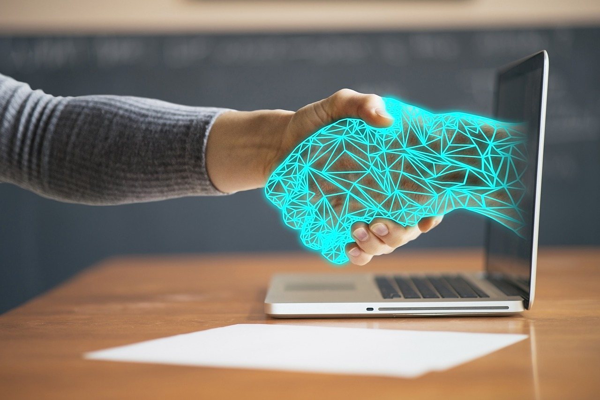
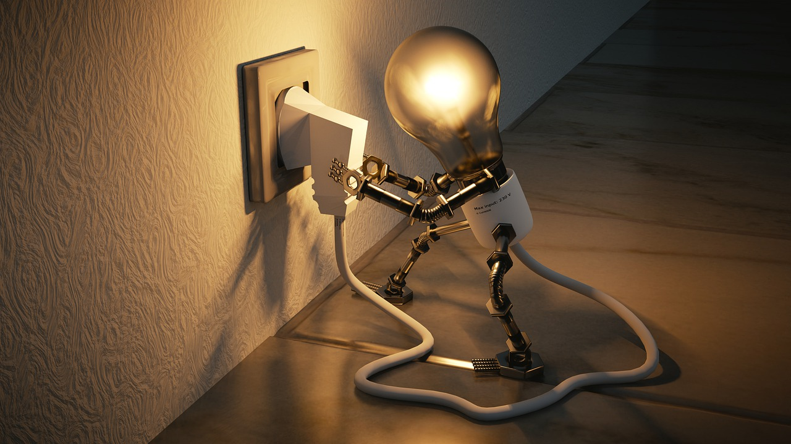

Our promises.
 We want to be able to create a connected community of upcycling engineers through our app and our services.
We want to be able to create a connected community of upcycling engineers through our app and our services.

We act morally and lawfully, making sure that the information that users are exposed to are factual and appropriate.

At UpCyc, we support and encourage those who want to upcycle and change their behaviors.
UpCyc enables individuals to adopt sustainable consumption patterns through upcycling. Our app provides people with a creative outlet to cultivate their passion for sustainability while establishing connections with individuals during an unprecedented time amidst COVID-19.